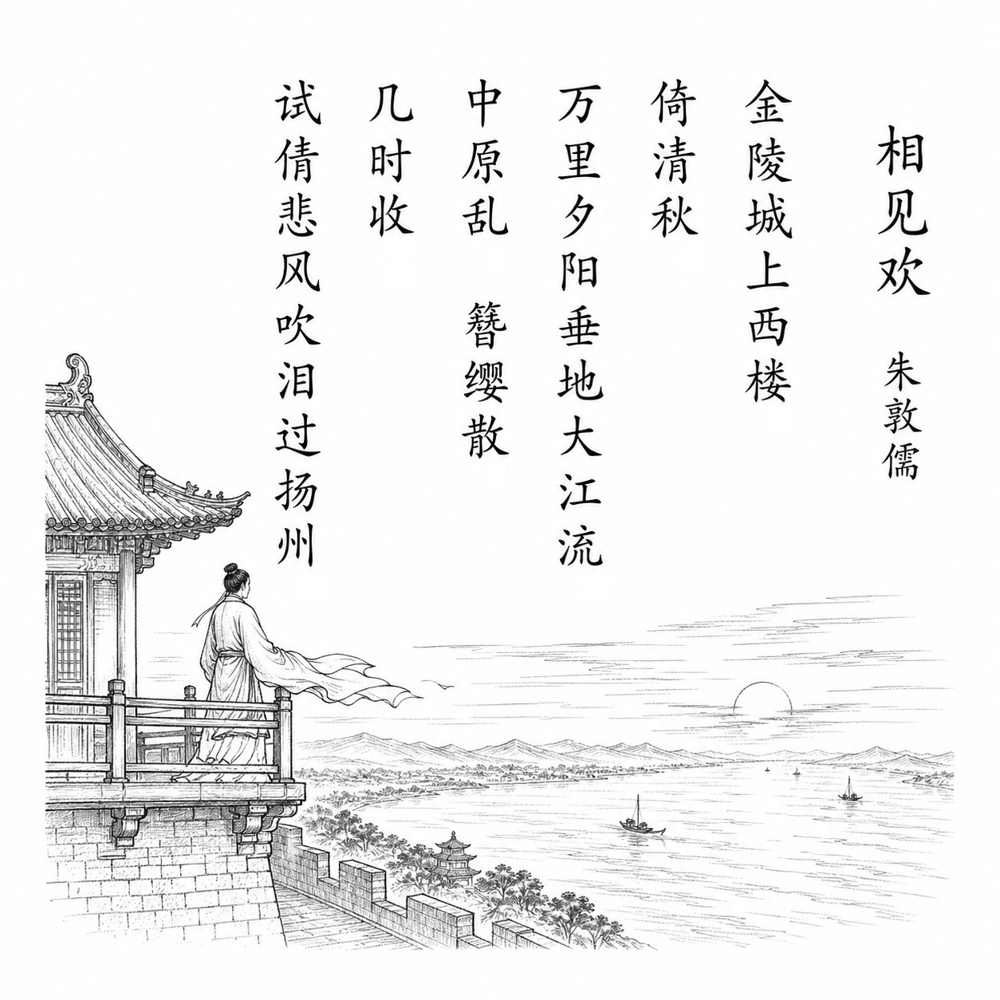

宋 · 朱敦儒
相见欢
金陵城上西楼
金陵城上西楼，倚清秋。万里夕阳垂地大江流。
中原乱，簪缨散，几时收？试倩悲风吹泪过扬州。
白话翻译
登上金陵城西楼，倚楼面对清冷的秋色。万里夕阳低垂，大江滚滚东流。
中原战乱，士大夫四散逃亡，什么时候才能收复故土？真想请悲凉的秋风，把我的泪吹过扬州前线。
为什么写这篇古诗文
1127年靖康之难后，朱敦儒仓促南逃，客居金陵。登楼所见的秋色、夕阳和江流触发了他的亡国之痛；词中“中原乱”直指金兵南侵，“几时收”表达对收复故土的盼望。
关于作者
朱敦儒（1081—1159），字希真，洛阳人。早年词多写闲适生活，南渡后亲历国破家亡，作品转而沉郁悲壮；晚年又归于隐逸清疏。